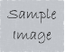

HTML は、Web ブラウザー上で表示される文書を記述するための言語です。 HTML のルールに従って書かれた文書(HTML ファイル)を、Web ブラウザーでは HTML のルールに従って表示します。 Web ブラウザー上で意図したように Web ページを表示するためには、 HTML のルールを守って記述する必要があります。 HTML の基本的なルールを確認しましょう。
| 要素 | 役割 |
|---|---|
| a | リンク |
| b | 太字 |
| br | 改行 |
| div | 範囲指定(ブロックレベル) |
| dl | 定義リストの形成 |
| em | 強調 |
| h1 | 見出し1 |
| h2 | 見出し2 |
| h3 | 見出し3 |
| h4 | 見出し4 |
| h5 | 見出し5 |
| h6 | 見出し6 |
| hr | 横向きの罫線 |
| i | イタリック体 |
| img | 画像の読み込み  |
| ol | 順序付きリスト |
| p | 段落の形成 |
| pre | 形成済みテキスト |
| s | |
| small | 小さく |
| span | 範囲指定(インライン) |
| strong | さらに強調 |
| sub | 下付き文字 |
| sup | 上付き文字 |
| table | 表の形成 |
| td | データ用セル |
| th | 見出し用セル |
| tr | 行の形成 |
| u | 下線 |
「こんにちは お元気ですか。文書B
今日は いいお天気ですね。」
「こんにちは お元気ですか。今日はいいお天気ですね。」
これらは、HTMLのルールの一部ですが、とても重要なことです。Webブラウザー上 で意図した通りに表示されない場合は、上記ルールが守られているかを確認して ください。